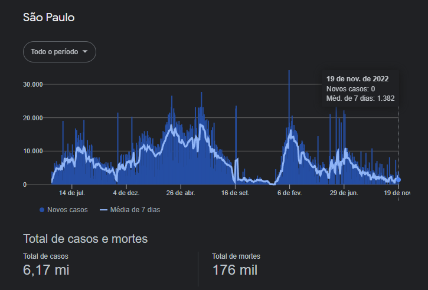

Os vírus ao longo da história
Peste de Atenas(430-427 a.C)
A partir do verão de 430 a.C., a cidade de Atenas, uma das grandes cidades da civilização grega, foi atingida por um surto epidêmico. A epidemia foi registrada pelo grego Tucídides, historiador que também relatou a Guerra do Peloponeso. A doença teve um grande surto entre 430-429 a.C., enfraqueceu-se durante 428 a.C. e ganhou força novamente a partir de 427 a.C.
Os relatos deixados por Tucídides falam que a doença iniciou-se na zona portuária de Atenas e espalhou-se pelo resto da cidade. Os casos começaram a aparecer bem no início da Guerra do Peloponeso e tiveram um efeito fulminante nas tropas atenienses. O autor J. N. Hays fala que uma tropa de hoplitas formada por 4 mil homens presenciou a morte de 1.050 deles
Gripe espanhola (1918-1919)
O começo do século XX também ficou marcado por uma pandemia que atingiu todos os continentes do planeta e causou a morte de, pelo menos, 50 milhões de pessoas. Essa doença ficou conhecida como gripe espanhola, sendo causada por uma mutação do vírus influenza, e afetou, inclusive, o Brasil.
Apesar do nome, a gripe espanhola não surgiu na Espanha. Acredita-se que ela tenha surgido na China ou nos Estados Unidos. De toda forma, os primeiros casos foram registrados em um acampamento militar chamado Fort Riley, que estava instalado no estado do Kansas (EUA). O primeiro paciente de que se tem conhecimento foi o soldado Albert Gitchell.
Ebola (2013-2016)
Em 1976, foram identificados, pela primeira vez, casos de doença pelo vírus ebola, doença causada pelo vírus de mesmo nome (ebola). Esse vírus foi identificado em regiões do Sudão e da República Democrática do Congo, ambos países do continente africano. Acredita-se que uma espécie de morcego seja a transmissora do vírus.
A ebola é uma doença grave e capaz de matar tanto seres humanos quanto primatas. Recentemente, entre 2013 e 2016, causou um surto epidêmico em regiões da África Ocidental. Esse surtou chamou a atenção da Organização Mundial da Saúde e de muitos países – alguns deles, inclusive, chegaram na época a decidir pelo fechamento de suas fronteiras para pessoas vindas daquela região.
Coronavírus (2019-Até hoje)
O coronavírus (COVID-19) é uma doença infecciosa causada pelo vírus SARS-CoV-2. A maioria das pessoas que adoece em decorrência da COVID-19 apresenta sintomas leves a moderados e se recupera sem tratamento especial. No entanto, algumas desenvolvem um quadro grave e precisam de atendimento médico.
O vírus pode se espalhar pela boca ou pelo nariz de uma pessoa infectada, em pequenas partículas líquidas expelidas quando elas tossem, espirram, falam, cantam ou respiram. O tamanho dessas partículas vai de gotas respiratórias maiores até aerosois menores.
O vírus acarretou em diversar mortes e ainda causa grande impacto socio-econômico em nosso país, estado e no mundo como mostra a imagem a seguir 